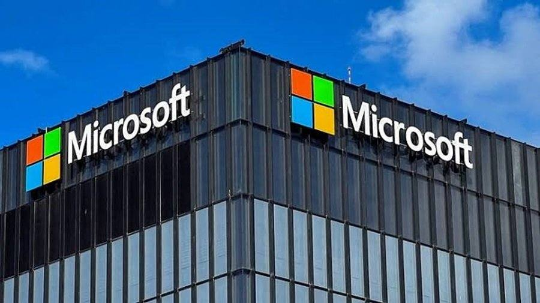

Microsoft Warns of Phishing Campaign Exploiting the Microsoft 365 Outage
Follow-up to flash 361: Microsoft Threat Intelligence warned on November 14, 2026, of an active phishing campaign detected on November 13 exploiting the Microsoft 365 outage. Fraudulent emails impersonate Microsoft 365 service-health notifications, cite the legitimate Exchange Online incident EX1550543, and falsely claim held messages will be deleted within 24 hours unless recipients click to restore them. Subject pattern "Outage - [six-character code]"; sender domains moments-notice.com, planetmaison.com, newbooker.com; SendGrid click-tracking links redirect to reallifeaccounting.com, path "/themelist0.html". Targets are organisations across multiple US sectors; targeting outside the US is unconfirmed. Consistent with credential phishing; credential collection and malware delivery unconfirmed. Microsoft advises verifying outages via the Microsoft 365 admin centre and hunting with Defender for Office 365 Threat Explorer and Defender XDR. Verified against the @MsftSecIntel post as quoted in Y News, read in full, plus the ANI wire and The Eastleigh Voice.

- 01THE WARNING — Microsoft Threat Intelligence warned on November 14, 2026, of an active phishing campaign exploiting the Microsoft 365 outage. The campaign was detected on November 13, one day after the disruption began on November 12, and the fraudulent emails impersonate Microsoft 365 service-health notifications.
- 02THE LURE — The emails cite the legitimate Exchange Online incident EX1550543, falsely claim held messages will be deleted within 24 hours unless recipients click to restore them, use subject lines following the pattern "Outage - [six-character code]", and were sent from moments-notice.com, planetmaison.com and newbooker.com, with SendGrid click-tracking links redirecting to reallifeaccounting.com.
- 03THE DEFENSE — Microsoft said the activity is consistent with credential phishing but has not confirmed credential collection or malware delivery. It urged organisations to verify outages through the Microsoft 365 admin centre and to hunt with Defender for Office 365 Threat Explorer and Defender XDR advanced hunting, including EmailEvents, EmailUrlInfo and UrlClickEvents.
WHAT HAPPENEDWhat Happened
Microsoft Threat Intelligence warned on November 14, 2026, that an active phishing campaign is exploiting the Microsoft 365 outage that began on November 12. The campaign was detected on November 13, one day after the disruption, and the fraudulent emails impersonate Microsoft 365 service-health notifications. They cite the legitimate Exchange Online incident reference, EX1550543, to appear credible, and falsely claim that messages held during the outage will be deleted within 24 hours unless recipients click a link to restore them.
The emails use subject lines following the pattern "Outage - [six-character code]", and sender display names that combine an organisation-specific prefix with phrases such as "Outage Notification" or "Service Health". Microsoft identified three sender domains: moments-notice.com, planetmaison.com and newbooker.com. The messages contain recipient-specific SendGrid click-tracking links that redirect to reallifeaccounting.com, including an observed path ending in "/themelist0.html". Similar messages have targeted organisations across multiple sectors in the United States; Microsoft did not confirm whether organisations outside the US were targeted.
Microsoft said the activity is consistent with credential phishing, in which attackers attempt to trick users into revealing login credentials, but it has not confirmed whether credentials were collected or malware was delivered. The company urged organisations to confirm service disruptions through the Microsoft 365 admin centre rather than clicking links in emails claiming to be service-health alerts, and advised security teams to use Microsoft Defender for Office 365 Threat Explorer and Microsoft Defender XDR advanced hunting to identify suspicious messages, examine embedded URLs and investigate whether users clicked the links.
WHY IT MATTERSA real incident reference is the lure
The danger in this campaign is not the forgery but the true detail inside it. EX1550543 is a genuine incident reference, and millions of people spent the last two days waiting for delayed mail. An email that names the real incident, arrives while the backlog is still being cleared, and promises to restore held messages meets its targets at the exact moment they are primed to click. The subject-line pattern and the organisation-specific display names add a second layer of plausibility: the message looks addressed to the recipient's own company, not blasted at random.
For the AI stack the warning lands on the same mailbox layer the outage itself hit. Copilot Chat and the OpenAI and Anthropic Microsoft 365 connectors read mail, calendar and search through Exchange Online, and the outage that began on November 12 left those tools returning errors for more than a day. The restoration in flash 361 closed the incident, but the phishing campaign shows the recovery window itself is an attack surface: while users still expect delayed messages, a fake restoration notice is the most believable lure an attacker can send.
WHAT TO WATCHThe indicators and the next Microsoft update
The watchpoints are the three sender domains, the SendGrid redirect to reallifeaccounting.com, and the "/themelist0.html" path, all of which Microsoft published so defenders can hunt for them. Security teams can trace potentially affected mail through EmailEvents, EmailUrlInfo and UrlClickEvents, and Microsoft Defender for Office 365 Safe Links can provide time-of-click protection where it is configured. Organisations should also review Safe Links policies and alert staff that no genuine Microsoft service-health notice asks users to click a link to restore held messages.
Two confirmations are still open. Microsoft has not said whether any credentials were harvested or malware delivered, and it has not confirmed targeting outside the United States. Either answer would change the scale of the incident. Separately, the post-incident report for the outage itself is still pending, due in preliminary form within two business days and in final form within five, and it remains the document that must name the upgrade, the change that surfaced it, and the traffic that froze the recovered servers.
SIGNAL JUDGMENT — ANALYSISThe outage is closed; the scam wearing its name is open
Tokenta Signal's judgment: The restoration in flash 361 closed the incident, but the phishing campaign is the incident's second act, and it is the more dangerous one for readers. A forged notice that cites a real incident number and arrives while mail is still delayed is built to be clicked, and the only reliable check is the channel: genuine Microsoft service-health status lives in the admin centre, never in a link inside an email. Treat any message promising to restore held mail as hostile until proven otherwise, hunt the three published domains and the reallifeaccounting.com redirect, and judge the campaign's scale by whether Microsoft later confirms harvested credentials or targeting beyond the United States.
WHAT REMAINS UNCERTAINWhat Remains Uncertain
EVIDENCEEvidence
Y News report of Microsoft Threat Intelligence's warning, read in full at 11:33 UTC on November 14, 2026, quoting the @MsftSecIntel post of November 14. The report states that Microsoft Threat Intelligence observed an active phishing campaign exploiting the Microsoft 365 service disruption of November 12, with messages impersonating Microsoft 365 service-health notifications and referencing the legitimate Exchange Online incident EX1550543. The fraudulent emails falsely claim messages held during the outage will be deleted within 24 hours unless recipients click to restore them, use subject lines following the pattern "Outage - [six-character code]", were sent from moments-notice.com, planetmaison.com and newbooker.com, and use recipient-specific SendGrid click-tracking links redirecting to reallifeaccounting.com, including the path "/themelist0.html".
PRIMARY SOURCESPrimary Sources
- Y News: Microsoft Warns of Phishing Scam Exploiting Microsoft 365 Outage
https://ynews.digital/technology/microsoft-365-outage-phishing-scam-warning/ - ANI: Microsoft restores 365 services globally after disruption; warns of phishing campaign exploiting outage
https://apnamatvchannel.com/business/microsoft-restores-365-services-globally-after-disruption-warns-of-phishing-campaign-exploiting-outage/ - The Eastleigh Voice: Hackers exploit Microsoft 365 outage to target users with phishing emails
https://eastleighvoice.co.ke/news/423665/hackers-exploit-microsoft-365-outage-to-target-users-with-phishing-emails
RELATEDRelated Intelligence
- Cursor Traces Its October Breach to a Leaked Fireworks Key
- DeepMind Opens the Datasets Behind Its AI Weather Models
- Microsoft 365 Outage Fully Closed as Business and Exchange Incidents Marked Service Restored
- Microsoft 365 Consumer Incident Remediated as Email Backlog Clears; Business Outage Still Open